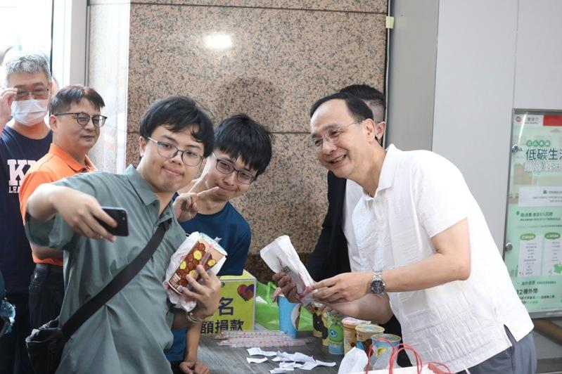

巴黎奥运羽球男双「麟洋配」李洋、王齐麟夺下中华队首金，完成羽球队史首次男双连霸纪录。国民党主席朱立伦5日在中央党部发放200份鸡排庆祝，并表示，接下来若有选手再夺金，会继续加码发放鸡排。
朱立伦今在中央党部发放200份鸡排，智库副首席执行官凌涛也加码发送50杯珍奶，一早就有民众排队，鸡排与珍奶10分钟内全数发送完毕。
朱立伦受访时表示，比赛一开始非常紧张、激动，麟洋配最后夺金牌，举国欢腾，已经好久没有这样的感觉。当国旗歌响起的那份感动，是全民共同的心声，大家都在电视机前跟着一起唱，展现热爱中华队与我们的国家。
至于接下来若有选手再夺金是否会再发鸡排？朱立伦说，相信每位中华队选手都是大家的骄傲，「不管是杨勇纬、戴资颖等，虽然没拿到奖牌但都是我们的骄傲，」都为国家付出非常多，接下来还有很多选手都要为他们加油。如果林郁婷再得金牌，他也要继续加码。
对于台湾的亚运拳击金牌女将林郁婷被卷入性别争议，朱立伦也声援表示，林郁婷是新北选手，在学生时代就见过她，也为她加油，林郁婷从小在拳击的表现，都是大家的骄傲。擂台上大家比较就好，不要用这种方式伤害选手，大家永远会做选手最强的后盾，给林郁婷加油，期待她得牌。
此外，国民党立委翁晓玲被指在微信朋友圈发文称「狂贺中华队王齐麟、李洋羽球双打二度奥运夺金！中国人的骄傲！」引发热议。朱立伦则未多做回应，仅说，现在全民欢腾，不管是怎样的心情，大家都是为麟洋加油。